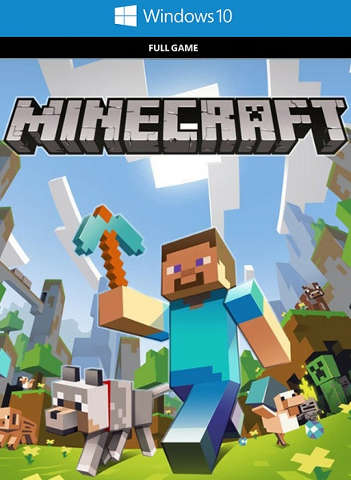
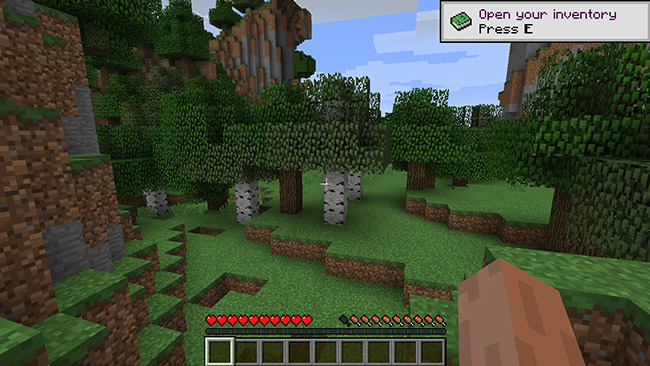
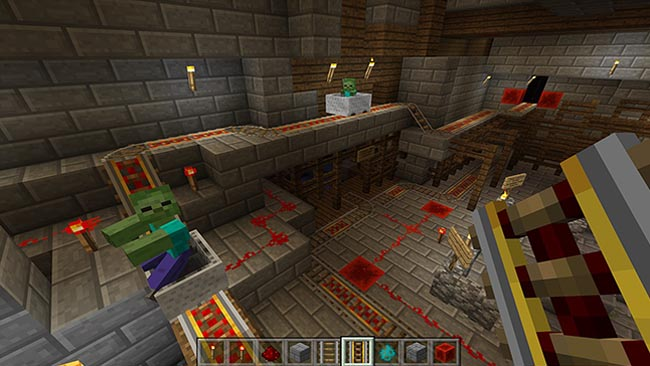

MINECRAFT DOWNLOAD
About Game

SCREENSHOTS


How to download and install ?
- Click on Download button given below
- Your downloading will start.
- Once downloaded,you will get a .zip file in your downloads
- Extract that zip file using a extractor. You can download one from here. Double click inside the Minecraft folder and run the exe application.
- Have fun and play! Make sure to run the game as administrator and if you get any missing dll errors, look for a Redist and install all the programs in the folder. Note: A list of multiplayer servers is provided in the “Cracked Servers List.html” file. Be sure to use a unique name when launching Minecraft and joining a server.
DOWNLOAD GAME
Click the DOWNLOAD button to get redirected the download page
DOWNLOAD
Requirements
- OS:Windoes 7 or up
- Processor: Intel Core i3-3210 3.2 GHz / AMD A8-7600 APU 3.1 GHz or equivalent
- Memory: 2GB RAM
- Storage: 1 GB available space
- Sound Card: DirectX 9.0 compatible